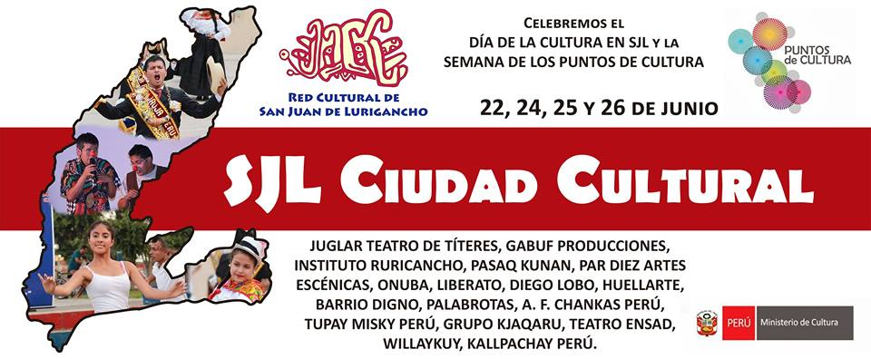

Mantener al menos 1,5 metros de distancia de otra persona, para evitar
contagios.
ZONAS TURISTICAS EN EL DISTRITO DE S.J.L
Fecha:
Hora:
Protocolos de Bioseguridad a Seguir
Uso obligatorio de la mascarilla en zonas cerradas del resinto zonal, para asi evitar contagios masivos.
Lavarse las manos para asegurarnos de eliminar todo tipo de virus y bacterias.
Usar alcohol en gel despues de haber tocado alguna superficie y evitar tocarnos la cara.
Algunas Zonas Turisticas
La Cruz "No Mataras", ubicada en el distrito de S.J.L desde el 15 de
diciembre del 2005, es un homenaje a la vida, pues en ese lugar fallecio
de 5 disparos la Hermana Juana Sawyer, que era una rehen de 9 delicuentes
que escaparon del penal de Lurigancho a bordo de una ambulancia.

El cerro San Cristóbal, y su cruz de hormigón y fierro, está ubicado entre los distritos del Rímac y San Juan de Lurigancho. Fue el apu en tiempos precolombinos, en los que se celebraban rituales, cultos paganos que aún se siguen cumpliendo soterradamente . Francisco Pizarro bautizó al cerro como San Cristóbal en 1535, tras el sitio de diez días que impusieron a los españoles Titu Yupanqui y sus 60,000 hombres por orden de Manco Inca.
Son 500 hectáreas que reverdecen y cobran vida en el invierno limeño, configurando un entorno de inusitado atractivo, que además de su belleza paisajística es el hábitat de diversas especies de fauna y flora silvestre, algunas de ellas consideradas patrimonio de la nación y que están en grave peligro de extinción.
El complejo arqueológico Mangomarca, conocido también como la Huaca Mangomarca o Templo Nuevo de Mangomarca, se encuentra situado en el valle bajo del Rímac, distrito de San Juan de Lurigancho, Es un conjunto arquitectónico hecho a base de tapial y de adobe, que floreció durante el Intermedio Tardío, como capital del curacazgo de Lurigancho o Ruricancho, que obedecía al Señorío Ichma (900-1470 d. C.).